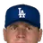

Franchise record book · MLB
Los Angeles Dodgers
Seasons covered: 1871–2002. Only games played for this franchise count.
Read this first: seasons 1871–2001 are real MLB history that shipped with the OOTP file, mapped by OOTP onto this universe's 30 original franchises (club names as they were that season). 2002 is this universe, season to date (top tiers: MLB, ABL, FBL). Player names are as the export stores them; OOTP gives some historical players generated names.
Home runs
Hits
RBI
Runs
Stolen bases
Doubles
Triples
Walks
Total bases
| # | Player | Season | Team | Total bases |
|---|---|---|---|---|
| #1 | 1930 |  Brooklyn Robins Brooklyn Robins | 416 | |
| #2 | 1954 | Brooklyn Dodgers | 378 | |
| #3 | 2001 | Los Angeles Dodgers | 370 | |
| #4 | 1953 | Brooklyn Dodgers | 370 | |
| #5 | 1962 | Los Angeles Dodgers | 356 | |
| #6 | 1997 | Los Angeles Dodgers | 355 | |
| #7 | 1929 | Brooklyn Robins | 348 | |
| #8 | 1950 | Brooklyn Dodgers | 343 | |
| #9 | 1929 | Brooklyn Robins | 342 | |
| #10 | 1955 | Brooklyn Dodgers | 338 |
Batting average qualified
| # | Player | Season | Team | Batting average |
|---|---|---|---|---|
| #1 | 1930 | Brooklyn Robins | .393 | |
| #2 | 1929 | Brooklyn Robins | .381 | |
| #3 | 1899 | Brooklyn Superbas | .379 | |
| #4 | 1924 | Brooklyn Robins | .375 | |
| #5 | 1883 | Buffalo Bisons | .374 | |
| #6 | 1932 | Brooklyn Dodgers | .368 | |
| #7 | 1882 | Buffalo Bisons | .368 | |
| #8 | 1900 | Brooklyn Superbas | .362 | |
| #9 | 1997 | Los Angeles Dodgers | .362 | |
| #10 | 1890 | Brooklyn Bridegrooms | .360 |
On-base % qualified
| # | Player | Season | Team | On-base % |
|---|---|---|---|---|
| #1 | 1894 | Brooklyn Grooms | .465 | |
| #2 | 1930 | Brooklyn Robins | .451 | |
| #3 | 1925 | Brooklyn Robins | .444 | |
| #4 | 1895 | Brooklyn Grooms | .442 | |
| #5 | 2000 | Los Angeles Dodgers | .438 | |
| #6 | 1952 | Brooklyn Dodgers | .437 | |
| #7 | 1961 | Los Angeles Dodgers | .434 | |
| #8 | 1894 | Brooklyn Grooms | .434 | |
| #9 | 1946 | Brooklyn Dodgers | .434 | |
| #10 | 1929 | Brooklyn Robins | .433 |
Slugging % qualified
| # | Player | Season | Team | Slugging % |
|---|---|---|---|---|
| #1 | 1930 | Brooklyn Robins | .678 | |
| #2 | 1954 | Brooklyn Dodgers | .647 | |
| #3 | 2000 | Los Angeles Dodgers | .643 | |
| #4 | 1997 | Los Angeles Dodgers | .638 | |
| #5 | 1955 | Brooklyn Dodgers | .628 | |
| #6 | 1953 | Brooklyn Dodgers | .627 | |
| #7 | 1929 | Brooklyn Robins | .612 | |
| #8 | 1953 | Brooklyn Dodgers | .611 | |
| #9 | 1995 | Los Angeles Dodgers | .606 | |
| #10 | 1956 | Brooklyn Dodgers | .598 |
OPS qualified
| # | Player | Season | Team | OPS |
|---|---|---|---|---|
| #1 | 1930 | Brooklyn Robins | 1.129 | |
| #2 | 2000 | Los Angeles Dodgers | 1.081 | |
| #3 | 1954 | Brooklyn Dodgers | 1.071 | |
| #4 | 1997 | Los Angeles Dodgers | 1.070 | |
| #5 | 1955 | Brooklyn Dodgers | 1.046 | |
| #6 | 1929 | Brooklyn Robins | 1.045 | |
| #7 | 1953 | Brooklyn Dodgers | 1.043 | |
| #8 | 1925 | Brooklyn Robins | 1.013 | |
| #9 | 1995 | Los Angeles Dodgers | 1.006 | |
| #10 | 1977 | Los Angeles Dodgers | 1.003 |
WAR (OOTP)
Wins
Strikeouts
Saves
Innings
| # | Player | Season | Team | Innings |
|---|---|---|---|---|
| #1 | 1883 | Buffalo Bisons | 656.1 | |
| #2 | 1876 | Louisville Grays | 622.0 | |
| #3 | 1879 | Buffalo Bisons | 593.0 | |
| #4 | 1877 | Louisville Grays | 559.0 | |
| #5 | 1874 | Brooklyn Atlantics | 497.0 | |
| #6 | 1885 | Brooklyn Grays | 481.2 | |
| #7 | 1873 | Brooklyn Atlantics | 480.2 | |
| #8 | 1884 | Brooklyn Atlantics | 476.0 | |
| #9 | 1881 | Buffalo Bisons | 474.0 | |
| #10 | 1880 | Buffalo Bisons | 458.2 |
Complete games
Shutouts
ERA qualified
WHIP qualified
K/9 qualified
| # | Player | Season | Team | K/9 |
|---|---|---|---|---|
| #1 | 1995 | Los Angeles Dodgers | 11.1 | |
| #2 | 2002 (MLB) | Los Angeles Dodgers | 11.0 | |
| #3 | 1962 | Los Angeles Dodgers | 10.5 | |
| #4 | 1965 | Los Angeles Dodgers | 10.2 | |
| #5 | 1960 | Los Angeles Dodgers | 10.1 | |
| #6 | 1997 | Los Angeles Dodgers | 10.1 | |
| #7 | 1961 | Los Angeles Dodgers | 9.5 | |
| #8 | 1996 | Los Angeles Dodgers | 9.2 | |
| #9 | 1964 | Los Angeles Dodgers | 9.0 | |
| #10 | 1963 | Los Angeles Dodgers | 8.9 |
WAR (OOTP)
Home runs
| # | Player | Years | Home runs |
|---|---|---|---|
| #1 | 1947–64 | 389 | |
| #2 | 1943–63 | 361 | |
| #3 | 1991–02 | 257 | |
| #4 | 1948–57 | 242 | |
| #5 | 1971–87 | 228 | |
| #6 | 1969–87 | 211 | |
| #7 | 1946–60 | 192 | |
| #8 | 1992–02 | 177 | |
| #9 | 1978–92 | 171 | |
| #10 | 1993–02 | 163 |
Hits
| # | Player | Years | Hits |
|---|---|---|---|
| #1 | 1909–27 | 2804 | |
| #2 | 1940–58 | 2170 | |
| #3 | 1960–79 | 2091 | |
| #4 | 1947–64 | 1995 | |
| #5 | 1969–87 | 1968 | |
| #6 |  Bill Russell | 1969–86 | 1926 |
| #7 | 1946–60 | 1910 | |
| #8 | 1953–66 | 1889 | |
| #9 | 1943–63 | 1884 | |
| #10 | 1959–72 | 1732 |
RBI
| # | Player | Years | RBI |
|---|---|---|---|
| #1 | 1947–64 | 1271 | |
| #2 | 1943–63 | 1254 | |
| #3 | 1909–27 | 1210 | |
| #4 | 1946–60 | 1058 | |
| #5 | 1969–87 | 992 | |
| #6 | 1991–02 | 903 | |
| #7 | 1940–58 | 885 | |
| #8 | 1948–57 | 856 | |
| #9 | 1960–79 | 849 | |
| #10 | 1971–87 | 842 |
Runs
| # | Player | Years | Runs |
|---|---|---|---|
| #1 | 1940–58 | 1338 | |
| #2 | 1909–27 | 1255 | |
| #3 | 1947–64 | 1199 | |
| #4 | 1953–66 | 1163 | |
| #5 | 1943–63 | 1088 | |
| #6 | 1960–79 | 1004 | |
| #7 | 1947–56 | 947 | |
| #8 | 1946–60 | 895 | |
| #9 | 1887–98 | 881 | |
| #10 | 1959–72 | 876 |
Stolen bases
| # | Player | Years | Stolen bases |
|---|---|---|---|
| #1 | 1959–72 | 490 | |
| #2 | 1972–87 | 418 | |
| #3 | 1960–79 | 335 | |
| #4 | 1884–93 | 302 | |
| #5 | 1884–03 | 298 | |
| #6 | 1981–94 | 290 | |
| #7 | 1887–92 | 272 | |
| #8 | 1887–98 | 264 | |
| #9 | 1884–96 | 241 | |
| #10 | 1940–58 | 232 |
Doubles
| # | Player | Years | Doubles |
|---|---|---|---|
| #1 | 1909–27 | 464 | |
| #2 | 1947–64 | 343 | |
| #3 | 1969–87 | 333 | |
| #4 | 1940–58 | 330 | |
| #5 | 1946–60 | 324 | |
| #6 | 1960–79 | 321 | |
| #7 | 1953–66 | 304 | |
| #8 | 1943–63 | 294 | |
| #9 | Bill Russell | 1969–86 | 293 |
| #10 | 1991–02 | 276 |
Triples
| # | Player | Years | Triples |
|---|---|---|---|
| #1 | 1909–27 | 171 | |
| #2 | 1960–79 | 110 | |
| #3 | 1909–25 | 97 | |
| #4 | 1910–24 | 87 | |
| #5 | 1884–95 | 85 | |
| #6 | 1905–18 | 82 | |
| #7 | 1947–64 | 82 | |
| #8 | 1940–58 | 80 | |
| #9 | 1884–03 | 76 | |
| #10 | 1897–13 | 76 |
Walks
| # | Player | Years | Walks |
|---|---|---|---|
| #1 | 1940–58 | 1210 | |
| #2 | 1953–66 | 1036 | |
| #3 | 1943–63 | 925 | |
| #4 | 1947–64 | 893 | |
| #5 | 1971–87 | 765 | |
| #6 | 1947–56 | 740 | |
| #7 | 1909–27 | 632 | |
| #8 | 1972–87 | 603 | |
| #9 | 1933–45 | 584 | |
| #10 | 1980–92 | 567 |
Total bases
| # | Player | Years | Total bases |
|---|---|---|---|
| #1 | 1909–27 | 4003 | |
| #2 | 1947–64 | 3669 | |
| #3 | 1943–63 | 3357 | |
| #4 | 1960–79 | 3094 | |
| #5 | 1940–58 | 3038 | |
| #6 | 1969–87 | 3004 | |
| #7 | 1946–60 | 2922 | |
| #8 | 1991–02 | 2531 | |
| #9 | 1953–66 | 2530 | |
| #10 | Bill Russell | 1969–86 | 2471 |
Batting average min 2,000 PA
| # | Player | Years | Batting average |
|---|---|---|---|
| #1 | 1892–10 | .352 | |
| #2 | 1879–04 | .348 | |
| #3 | 1926–45 | .339 | |
| #4 | 1912–27 | .337 | |
| #5 | 1992–02 | .331 | |
| #6 | 1909–27 | .317 | |
| #7 | 1962–82 | .315 | |
| #8 | 1896–08 | .313 | |
| #9 | 1988–02 | .312 | |
| #10 | 1947–56 | .311 |
On-base % min 2,000 PA
| # | Player | Years | On-base % |
|---|---|---|---|
| #1 | 1988–02 | .424 | |
| #2 | 1912–27 | .419 | |
| #3 | 1879–04 | .416 | |
| #4 | 1934–49 | .414 | |
| #5 | 1947–56 | .407 | |
| #6 | 1943–53 | .403 | |
| #7 | 1887–98 | .398 | |
| #8 | 1926–45 | .394 | |
| #9 | 1992–02 | .394 | |
| #10 | 1981–97 | .392 |
Slugging % min 2,000 PA
| # | Player | Years | Slugging % |
|---|---|---|---|
| #1 | 1988–02 | .573 | |
| #2 | 1992–02 | .572 | |
| #3 | 1926–45 | .557 | |
| #4 | 1947–64 | .553 | |
| #5 | 1912–27 | .552 | |
| #6 | 1966–82 | .528 | |
| #7 | 1879–04 | .526 | |
| #8 | 1978–92 | .512 | |
| #9 | 1993–02 | .504 | |
| #10 | 1948–57 | .500 |
OPS min 2,000 PA
| # | Player | Years | OPS |
|---|---|---|---|
| #1 | 1988–02 | .998 | |
| #2 | 1912–27 | .971 | |
| #3 | 1992–02 | .966 | |
| #4 | 1926–45 | .951 | |
| #5 | 1879–04 | .941 | |
| #6 | 1947–64 | .935 | |
| #7 | 1966–82 | .915 | |
| #8 | 1978–92 | .893 | |
| #9 | 1933–45 | .887 | |
| #10 | 1947–56 | .880 |
WAR (OOTP)
| # | Player | Years | WAR (OOTP) |
|---|---|---|---|
| #1 | 1947–64 | 70.7 | |
| #2 | 1909–27 | 63.8 | |
| #3 | 1943–63 | 52.8 | |
| #4 | 1940–58 | 51.5 | |
| #5 | 1947–56 | 51.3 | |
| #6 | 1960–79 | 43.5 | |
| #7 | 1969–87 | 40.4 | |
| #8 | 1948–57 | 39.3 | |
| #9 | 1971–87 | 38.8 | |
| #10 | 1946–60 | 37.2 |
Wins
| # | Player | Years | Wins |
|---|---|---|---|
| #1 | 1966–88 | 233 | |
| #2 | 1956–69 | 209 | |
| #3 | 1915–35 | 190 | |
| #4 | 1892–03 | 177 | |
| #5 | 1955–66 | 165 | |
| #6 | 1875–92 | 159 | |
| #7 | 1916–34 | 158 | |
| #8 | 1957–75 | 147 | |
| #9 | 1980–97 | 141 | |
| #10 | 1953–69 | 136 |
Strikeouts
| # | Player | Years | Strikeouts |
|---|---|---|---|
| #1 | 1966–88 | 2696 | |
| #2 | 1956–69 | 2486 | |
| #3 | 1955–66 | 2396 | |
| #4 | 1915–35 | 1918 | |
| #5 | 1980–97 | 1759 | |
| #6 | 1983–00 | 1456 | |
| #7 | 1953–69 | 1331 | |
| #8 | 1988–01 | 1314 | |
| #9 | 1978–94 | 1292 | |
| #10 | 1907–16 | 1217 |
Saves
| # | Player | Years | Saves |
|---|---|---|---|
| #1 | 1990–01 | 129 | |
| #2 | 1985–97 | 127 | |
| #3 | 1960–76 | 125 | |
| #4 | 1961–73 | 101 | |
| #5 | 1980–94 | 85 | |
| #6 | 1950–62 | 82 | |
| #7 | 1981–90 | 64 | |
| #8 | 1970–94 | 60 | |
| #9 | 1980–96 | 59 | |
| #10 | 1935–49 | 49 |
Innings
| # | Player | Years | Innings |
|---|---|---|---|
| #1 | 1966–88 | 3816.1 | |
| #2 | 1956–69 | 3432.0 | |
| #3 | 1892–03 | 2857.0 | |
| #4 | 1915–35 | 2757.2 | |
| #5 | 1875–92 | 2627.1 | |
| #6 | 1916–34 | 2426.0 | |
| #7 | 1957–75 | 2396.2 | |
| #8 | 1884–97 | 2376.1 | |
| #9 | 1907–16 | 2375.1 | |
| #10 | 1980–97 | 2348.2 |
Complete games
| # | Player | Years | Complete games |
|---|---|---|---|
| #1 | 1875–92 | 279 | |
| #2 | 1892–03 | 279 | |
| #3 | 1884–97 | 255 | |
| #4 | 1915–35 | 212 | |
| #5 | 1916–34 | 205 | |
| #6 | 1907–16 | 186 | |
| #7 | 1956–69 | 167 | |
| #8 | 1911–24 | 157 | |
| #9 | 1966–88 | 156 | |
| #10 | 1884–93 | 147 |
Shutouts
| # | Player | Years | Shutouts |
|---|---|---|---|
| #1 | 1966–88 | 52 | |
| #2 | 1956–69 | 49 | |
| #3 | 1955–66 | 40 | |
| #4 | 1907–16 | 38 | |
| #5 | 1957–75 | 34 | |
| #6 | 1980–97 | 29 | |
| #7 | 1915–35 | 29 | |
| #8 | 1911–24 | 25 | |
| #9 | 1875–92 | 24 | |
| #10 | 1983–00 | 24 |
ERA min 500 IP
| # | Player | Years | ERA |
|---|---|---|---|
| #1 | 1873–77 | 1.89 | |
| #2 | 1911–24 | 2.31 | |
| #3 | 1907–16 | 2.42 | |
| #4 | 1911–19 | 2.45 | |
| #5 | 1961–73 | 2.56 | |
| #6 | 1908–25 | 2.58 | |
| #7 | 1960–76 | 2.62 | |
| #8 | 1903–21 | 2.62 | |
| #9 | 1875–92 | 2.63 | |
| #10 | 1968–79 | 2.67 |
WHIP min 500 IP
| # | Player | Years | WHIP |
|---|---|---|---|
| #1 | 1986–02 | 1.05 | |
| #2 | 1873–77 | 1.07 | |
| #3 | 1968–79 | 1.10 | |
| #4 | 1955–66 | 1.11 | |
| #5 | 1966–88 | 1.12 | |
| #6 | 1908–25 | 1.13 | |
| #7 | 1960–76 | 1.13 | |
| #8 | 1911–24 | 1.13 | |
| #9 | 1929–45 | 1.14 | |
| #10 | 1875–92 | 1.15 |
K/9 min 500 IP
| # | Player | Years | K/9 |
|---|---|---|---|
| #1 | 1995–02 | 10.1 | |
| #2 | 1955–66 | 9.3 | |
| #3 | 1994–02 | 8.3 | |
| #4 | 1986–02 | 8.1 | |
| #5 | 1994–02 | 7.9 | |
| #6 | 1960–76 | 7.4 | |
| #7 | 1987–00 | 7.1 | |
| #8 | 1964–77 | 7.0 | |
| #9 | 1983–97 | 7.0 | |
| #10 | 1958–68 | 6.9 |
WAR (OOTP)
| # | Player | Years | WAR (OOTP) |
|---|---|---|---|
| #1 | 1966–88 | 78.5 | |
| #2 | 1956–69 | 73.3 | |
| #3 | 1915–35 | 73.0 | |
| #4 | 1955–66 | 63.1 | |
| #5 | 1983–00 | 46.1 | |
| #6 | 1980–97 | 46.0 | |
| #7 | 1875–92 | 45.5 | |
| #8 | 1907–16 | 42.5 | |
| #9 | 1957–75 | 40.9 | |
| #10 | 1916–34 | 38.8 |
The franchise's best real-history seasons by winning percentage.
| Season | Club | W | L | PCT | Postseason |
|---|---|---|---|---|---|
| 1953 | Brooklyn Dodgers | 105 | 49 | .682 | Playoffs |
| 1899 | Brooklyn Superbas | 101 | 47 | .682 | |
| 1889 | Brooklyn Bridegrooms | 93 | 44 | .679 | |
| 1942 | Brooklyn Dodgers | 104 | 50 | .675 | |
| 1890 | Brooklyn Bridegrooms | 86 | 43 | .667 | |
| 1941 | Brooklyn Dodgers | 100 | 54 | .649 | Playoffs |
| 1955 | Brooklyn Dodgers | 98 | 55 | .641 | Champion |
| 1974 | Los Angeles Dodgers | 102 | 60 | .630 | Playoffs |
| 1949 | Brooklyn Dodgers | 97 | 57 | .630 | Playoffs |
| 1888 | Brooklyn Bridegrooms | 88 | 52 | .629 |